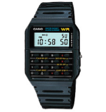
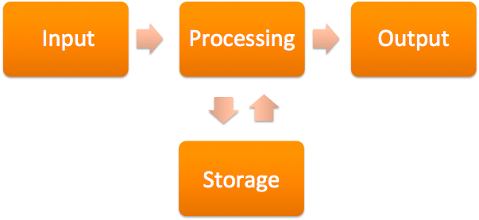

(硬體篇)介紹 <<
Previous Next >> (硬體篇)硬體
(硬體篇)電腦計算機功能1輸入2輸出3儲存和處理
是什麼使計算機成為計算機？ 一台計算機是否必須具有某些部件才能視為計算機？ 考慮一下1980年代的計算機：它們都包括顯示屏，鍵盤和處理單元。 隨著時間的流逝，計算機已經演變為看起來不像“典型”計算機的設備。 考慮iPhone或Android平板電腦，其中輸入方法依靠觸摸，而不使用單獨的鍵盤。 下面顯示的計算器手錶怎麼樣？ 是電腦嗎？
What makes a computer a computer? Does a computer have to have certain pieces to be considered a computer? Consider the computers of the 1980s: they all included a display screen, a keyboard, and a processing unit. Over time, the computers have evolved into devices that do not look like a “typical” computer. Consider the iPhone or Android tablet, where the method of input relies on touch, without the use of a separate keyboard. How about the calculator watch displayed below; is it a computer?

不論機器的外形尺寸如何，計算機都具有四個基本功能（輸入，輸出，存儲和處理）。 下面顯示了這些功能如何協同工作。
Regardless of the form factor of the machine, four basic functions — input, output, storage, and processing — make a computer. Below is a display of how those functions work together.

因此，當我們考慮計算機的歷史和計算機的未來時，我們必須考慮什麼是計算機，什麼不是計算機。顯然，我們的台式機和筆記本電腦是計算機，因為它們執行輸入，處理，輸出和存儲功能。但是，由於我們的手機和智能手機執行所有這些功能，所以它們也是如此。那我們的電視呢？其中許多計算機也是複雜的計算機，因為它們使用遙控器從我們的輸入中獲取信息，處理信息並返回輸出，例如點播電影。這些電視中的許多電視也會存儲信息，例如您喜歡的頻道，甚至是視頻內容本身，以供以後播放。甚至有些恆溫器都是計算機，因為它們也執行這些功能，例如NEST和其他流行品牌的“智能恆溫器”。記住，對某物是否是計算機的主要確定取決於它執行的功能：它執行輸入，處理，輸出和存儲嗎？如果是這樣，則它是一台計算機。
So, as we consider the history of computers and the future of computers, we must consider what is and what is not a computer. Obviously, our desktops and laptops are computers, since they perform the input, processing, output, and storage functions. But so also are our cellular phones and smartphones, since they perform all these functions. What about our televisions? Many of these are complex computers as well, since they take information from our input using the remote control, process the information, and return an output, such as an on-demand movie. Many of these televisions also store the information, such as your favorite channels or even the video content itself for later playback. Even some thermostats are computers, since they also perform these functions, such as the “smart thermostats,” like the NEST and other popular brands. Remember, the main determination of whether something is a computer or not relies on the functions it performs: does it perform input, processing, output, and storage? If so, then it is a computer.
我了解了嗎?
Q:是非題：執行輸入，處理，輸出和存儲的任何設備都是計算機。
A:是
Q:True or False: Any device that performs input, processing, output, and storage is a computer.
A:true.
(硬體篇)介紹 <<
Previous Next >> (硬體篇)硬體